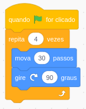

Exercícios usando uma caneta no Scratch
Sempre antes de começar a mexer no Scratch, faça login no Scratch, clicando em "Entrar" no canto superior direito.

obs.: Lembre-se de mudar o idioma do Scratch clicando neste "globinho"

Atividade
Nas últimas aulas, aprendemos a programar a caneta do Scratch e desenhamos algumas formas geométricas usando essa ferramenta.
Para desenhar um triângulo (polígono com 3 lados), podemos utilizar os seguintes blocos de programação:
Para desenhar um quadrado (polígono com 4 lados), podemos utilizar os seguintes blocos de programação:

Para desenhar um pentágono (polígono com 5 lados), podemos utilizar os seguintes blocos de programação:
Teste esses códigos para desenhas os polígonos
Consegue observar o padrão entre cada código?
- Agora faça o código para desenhar um poligono de 6 lados.
- Agora faça o código para desenhar um poligono de 7 lados.
- Agora faça o código para desenhar um poligono de 8 lados.
- Agora faça o código para desenhar um poligono de 9 lados.
Nós aprendemos ano passado como fazer perguntas para o usuário.
E depois armazenar a resposta dada pelo usuário dentro de uma variável.
Então, depois de perguntar para o usuário quantos lados deve ter o polígono, escreva um algoritmo que desenhe um polígono de acordo com o
número de lados pedido.
Dicas:
- Você provavelmente precisará criar uma variável chamada "lados";
- Você usará o bloco dessa variável e o bloco que realiza operação de divisão matemática.
Desafio
Escreva um algoritmo que desenhe uma espiral.
Dica: uma espiral é como um círculo, no qual os pedaços vão aumentando de valor.